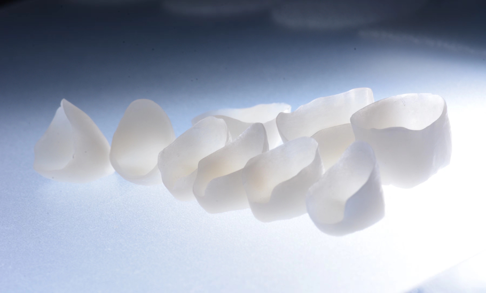
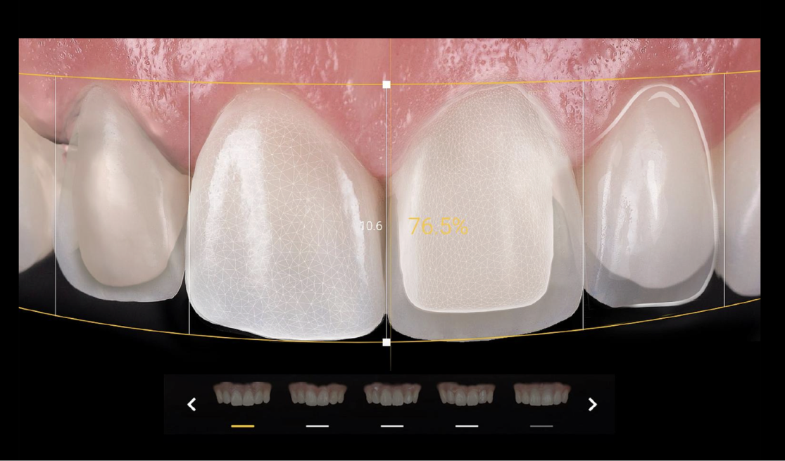
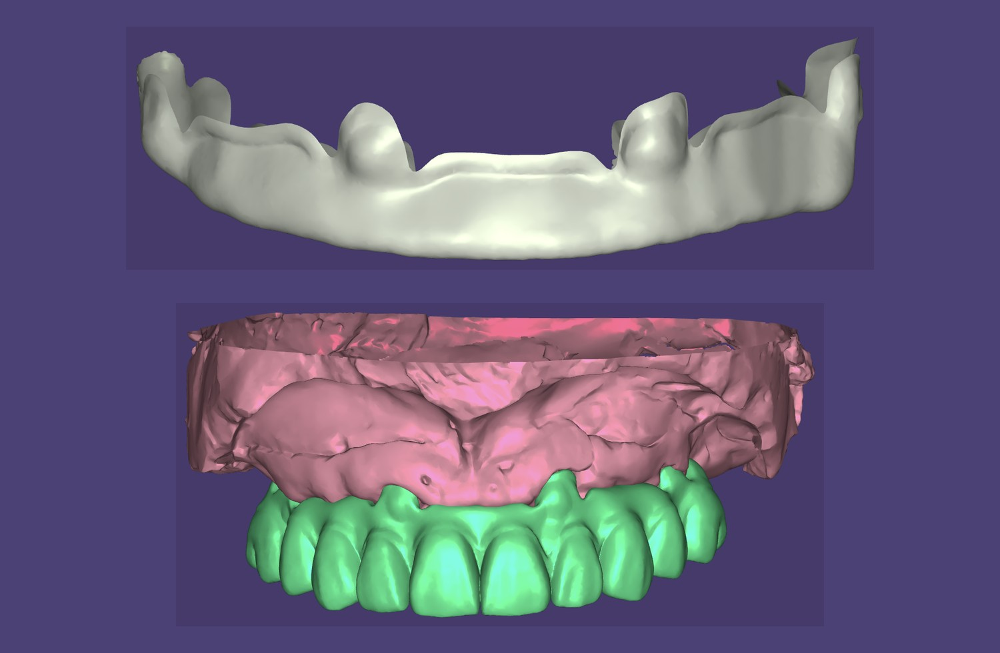

Vast restauratief CAD
Enkele kronen, bruggen, veneers, inlays, onlays, copings en restauratieve CAD-bestanden voorbereid voor technische beoordeling en productie.
Digitaal dental design voor labs en klinieken
CAD-diensten met menuprijzen voor routinewerk, met afgebakende planningssupport voor complexe rehabilitatiecases.
MW DenTech ondersteunt tandheelkundige laboratoria en digitaal uitgeruste klinieken die externe ontwerphulp nodig hebben voor kroon- en brugwerk, esthetisch werk, implantaatgevallen, spalken, occlusale revalidatie van de volledige mond en revalidatie van volledige implantaten.
De kernondersteuning van de CAD is gescheiden van de strategische rehabilitatieworkflows, zodat routinematige ontwerpcasussen en reconstructiecasussen in meerdere fasen vanaf het begin duidelijk kunnen worden gedefinieerd.
Compacte, productiegerichte CAD-ondersteuning voor gevallen waarin de klinische positie en behandelrichting al zijn gedefinieerd.

Enkele kronen, bruggen, veneers, inlays, onlays, copings en restauratieve CAD-bestanden voorbereid voor technische beoordeling en productie.

Glimlachontwerp, digitale wax-up, morfologie van de voortanden, textuur, symmetrie en door SmileCloud ondersteunde esthetische workflows.

Op maat gemaakte abutments, implantaatkronen, geschroefde restauraties, ontwerp van een emergentieprofiel en restauratieve CAD-ondersteuning voor implantaten.

Enkele implantaatgeleider CAD met extra implantaatplaatsen, geprijsd op basis van omvang, plus een ontwerp voor geleide chirurgie met gedeeltelijke boog wanneer het implantaatplan en het sleeve-protocol duidelijk zijn.

Michigan-spalken, stabilisatiespalken, nachtbeugels, deprogrammeurs en routine-appliance-CAD wanneer de bijtpositie al is voorgeschreven.
Strategische, zaakspecifieke planningsondersteuning voor zaken die volgorde, verificatie en coördinatie van voorlopig tot definitief vereisen.
 AxisGuide
AxisGuide
Geselecteerde, op de MRI/CBCT/STL geïnformeerde planningsondersteuning voor door artsen geleide TMJ-gevoelige restauratieve, orthodontische en volledige mondrehabilitatiegevallen.
Meer over AxisGuide Volle mond
Volle mond
Uitgebreide revalidatie voor versleten gebit, VDO-wijziging, correctie van het occlusale vlak, additieve wax-up, voorlopig ontwerp en uiteindelijke restauratieve CAD-coördinatie.
 Volledige boog
Volledige boog
All-on-X- en terminale dentitieworkflows, inclusief planning van implantaten voor de volledige boog, ontwerp van chirurgische gidsen, planning van fixatiepennen, voorlopig ontwerp voor onmiddellijk laden, verificatieworkflows en uiteindelijke ondersteuning voor volledige prothesen.

We maken de praktische details expliciet voordat de werkzaamheden aan de CAD beginnen, zodat uw team weet wat er wordt opgeleverd en wanneer dit kan worden beoordeeld.
Complexe tandheelkundige dossiers zijn gevoelig. We houden betalingen, klinische dossiers en projectomvang gescheiden, zodat laboratoria en klinieken kunnen samenwerken zonder onnodige patiëntinformatie vrij te geven.
CaseHub centraliseert gestructureerde casusinname, tandselectie, bestandsupload, statusregistratie, casusbespreking en leveringsbestanden in één privéwerkruimte. Het is waar mogelijk bedoeld voor geanonimiseerde of geminimaliseerde klinische dossiers, en de bèta is alleen op uitnodiging beschikbaar, terwijl MW DenTech de workflow valideert met geselecteerde laboratoria en klinieken.
Verzamel de casuscode, het receptoverzicht, de geselecteerde tanden, de deadline, de urgentie en de eerste bestanden voordat MW met de scopebeoordeling begint.
Houd partnervragen, MW-notities, bestandslevering en beoordelingsfeedback verbonden met dezelfde casereferentie.
Toegang wordt selectief geïntroduceerd nadat de eerste samenwerking is afgerond en er overeenstemming is bereikt over de verwachtingen op het gebied van gegevensoverdracht.
Routinematig ontwerpwerk wordt geprijsd voor terugkerende samenwerking. Geavanceerde planning blijft op de eerste plaats, dus bij de beoordeling van de beeldvorming, de sequentiëring, de verificatie en de voorlopige fases wordt rekening gehouden met de zorg die ze nodig hebben.
Deze geanonimiseerde voorbeelden tonen het soort dossiers, de planningsresultaten en de klinische grenzen die worden gebruikt wanneer een casus verder gaat dan de menuprijs CAD.




Gepubliceerde vanafprijzen helpen klanten herhaalbaar CAD-werk te testen. De vermelde EUR-prijzen zijn netto professionele honoraria exclusief btw/IVA, tenzij anders vermeld. Offerte-eerst items worden afzonderlijk beoordeeld wanneer sequencing, beeldbeoordeling of gefaseerde voorlopige planning de werklast beïnvloeden.
BTW / IVA-opmerking: Spaanse IVA wordt toegepast wanneer dat vereist is; het standaardtarief is momenteel 21%. In aanmerking komende EU-B2B-klanten kunnen met verleggingsregeling worden gefactureerd wanneer geldige btw-gegevens zijn bevestigd; andere toepasselijke belastingen worden verwerkt volgens klantlocatie en factuurstatus.
Gebouwd rond echte tandheelkundige CAD-economie. Prijzen hebben uitsluitend betrekking op CAD-ontwerp en planningsondersteuning; printen, productie, onderdelen, verzending, douanerechten, btw/IVA en andere belastingen zijn niet inbegrepen, tenzij anders vermeld in de schriftelijke offerte of factuur. Volumeprijzen zijn beschikbaar nadat terugkerend volume, bestandskwaliteit en revisiepatronen zijn bewezen.
CAD-werk met een menuprijs kan na bestandsbeoordeling via het menu worden geprijsd. AxisGuide, full-mouth en full-arch workflows worden eerst beoordeeld omdat de records, sequencing en verificatiestappen de echte werklast bepalen.
Selecteer een CAD-service tegen een menuprijs of identificeer het geval als AxisGuide, volledige mond- of volledige boogrevalidatie.
We controleren de bestandskwaliteit, bibliotheken, beetregistraties, beeldvorming, productiemethode en overdrachtspad voordat het werk wordt gepland.
CAD-services met een menuprijs ontvangen betalings- en factuurinstructies na bevestiging van de scope; complexe zaken krijgen een schriftelijke offerte of depotaanvraag.
Uw team beoordeelt de CAD of planningsbestanden vóór productie of de volgende klinische fase.
Het beste voor herhaalbaar werk waarbij gegevens, bijtpositie, implantaatbibliotheken en productiemethode al duidelijk zijn.
Geprijsd via het gepubliceerde nettomenu na bestandsbeoordeling en scopebevestiging.
Menu-offerte aanvragenHet beste voor gevallen waarin sequencing, beeldbeoordeling, voorlopige strategie of multidisciplinaire coördinatie de reikwijdte beïnvloeden.
Individueel afgehandeld vóór schriftelijke offerte-, aanbetalings- of gefaseerde betalingsinstructies.
Offerte aanvragenVerzend intraorale scans, beetregistraties indien relevant, uitvoerformaat, CAD/CAM-systeem, materiaal of productiemethode en gevraagde doorlooptijd.
Stuur scans, foto's, beet- of kaakrelatiegegevens, voorlopige of wax-up-referenties, VDO of occlusale doelen, en MRI/CBCT indien opgenomen in de scope.
Stuur CBCT/DICOM, implantaatplan of voorgestelde posities, scanbody- of MUA-gegevens, fixatievereisten, onmiddellijk voorlopig doel en definitief prothesedoel.
Stuur eerst één representatieve casus. We bevestigen of het past bij de menuprijs of dat er een uitgebreide offerte nodig is voordat het ontwerp begint.
Korte antwoorden voor labs en clinici vóór de eerste case.
MW DenTech biedt CAD-ontwerp- en planningsondersteuning. Prijzen zijn netto CAD/design-kosten; printen, frezen, componenten, verzending, douanerechten, btw/IVA en andere belastingen zijn niet inbegrepen, tenzij afzonderlijk overeengekomen en weergegeven in de schriftelijke offerte of factuur.
Het is een routinematige CAD met een duidelijke servicecategorie, bruikbare gegevens, voorgeschreven beetpositie, bekende productiemethode en voorspelbare resultaten.
Complexe gevallen zijn afhankelijk van sequencing, beeldbeoordeling, voorlopige strategie, verificatiegegevens en interdisciplinaire coördinatie, dus de reikwijdte moet worden bevestigd voordat er een prijs wordt vastgesteld.
Eén technische revisie is inbegrepen als de originele documenten en instructies ongewijzigd zijn. Nieuwe records, een nieuwe beetpositie, een gewijzigd implantaatplan, een gewijzigde behandelrichting of toegevoegde resultaten worden behandeld als een scope-update.
Gebruik een afgesproken uploadlink of beveiligd overdrachtskanaal. Verwijder waar mogelijk patiëntidentificerende informatie en houd betalingsnota's vrij van klinische details.
AxisGuide is beschikbaar voor geselecteerde door artsen geleide TMJ-gevoelige revalidatiegevallen. Het biedt een gestructureerd, op beeldvorming gebaseerd traject voor het plannen, testen en verifiëren van een voorgestelde mandibulaire positie vóór gefaseerde occlusale reconstructie.